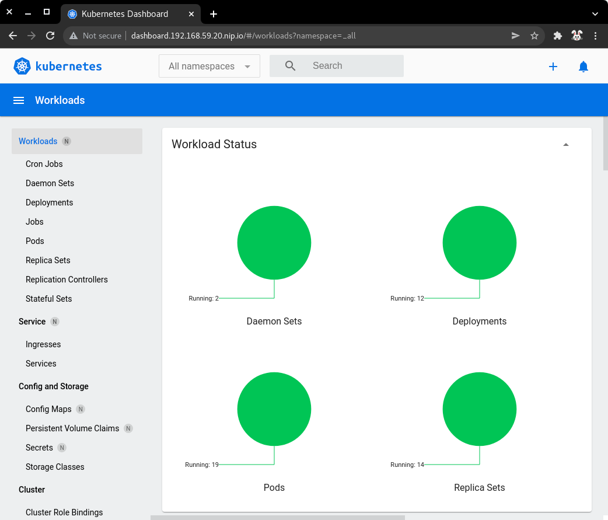

Guided Exercise: Configuring Istio Ingress Control
In this exercise, you will configure the ingress resource to access the Kubernetes dashboard.
Outcomes
You should be able to:
-
Deploy the Kubernetes dashboard add-on in the minikube cluster.
-
Configure the ingress resource to access the application from outside the cluster.
To perform this exercise, ensure that you have:
-
The
minikube, andkubectlexecutables version 1.24 or later on a directory listed inPATH. -
MetalLB installed in the cluster. You can consult the installation guided exercise.
-
Istio installed in the cluster. You can consult the installation guided exercise.
|
Note
|
The minikube Istio add-on is outdated and cannot be installed in recent versions of Kubernetes. |
Procedure instructions
1) Start the minikube instance, and verify that MetalLB and Istio are installed.
1.1) Start the minikube instance.
[user@host kbe]$ minikube start
...output omitted...1.2) Verify that the pods in the metallb-system namespace are running.
[user@host kbe]$ kubectl get pods -n metallb-system
NAME READY STATUS RESTARTS AGE
controller-66bc445b99-2gv6w 1/1 Running 0 2d
speaker-jxjdm 1/1 Running 0 2d|
Warning
|
This guided exercise assumes that MetalLB is installed and configured. |
1.3) Verify that MetalLB has the IP address range configured.
[user@host kbe]$ kubectl get configmap config -n metallb-system -o yaml
apiVersion: v1
data:
config: |
address-pools:
- name: default
protocol: layer2
addresses:
- 192.168.59.20-192.168.59.30
...output omitted...|
Warning
|
If the IP address range for MetalLB is empty, then review the troubleshooting section in the MetalLB lecture. |
1.4) Verify that the deployments in the istio-system namespace are running.
[user@host kbe]$ kubectl get deployments -n istio-system
NAME READY UP-TO-DATE AVAILABLE AGE
grafana 1/1 1 1 1d
istio-egressgateway 1/1 1 1 1d
istio-ingressgateway 1/1 1 1 1d
istiod 1/1 1 1 1d
jaeger 1/1 1 1 1d
kiali 1/1 1 1 1d
prometheus 1/1 1 1 1d|
Warning
|
This guided exercise assumes that Istio is installed and configured. |
2) Enable the Kubernetes dashboard, and metrics server minikube add-ons.
2.1) Verify if dashboard, and metrics-server are listed in the available add-ons for minikube.
[user@host kbe]$ minikube addons list
|--------------------------|----------|------------|-----------------------|
| ADDON NAME | PROFILE | STATUS | MAINTAINER |
|--------------------------|----------|------------|-----------------------|
| ambassador | minikube | disabled | unknown (third-party) |
| auto-pause | minikube | disabled | google |
| csi-hostpath-driver | minikube | disabled | kubernetes |
| dashboard | minikube | disabled | kubernetes | # (1)
| default-storageclass | minikube | enabled ✅ | kubernetes |
| efk | minikube | disabled | unknown (third-party) |
| freshpod | minikube | disabled | google |
| gcp-auth | minikube | disabled | google |
| gvisor | minikube | disabled | google |
| helm-tiller | minikube | disabled | unknown (third-party) |
| ingress | minikube | disabled | unknown (third-party) |
| ingress-dns | minikube | disabled | unknown (third-party) |
| istio | minikube | disabled | unknown (third-party) |
| istio-provisioner | minikube | disabled | unknown (third-party) |
| kubevirt | minikube | disabled | unknown (third-party) |
| logviewer | minikube | disabled | google |
| metallb | minikube | enabled ✅ | unknown (third-party) |
| metrics-server | minikube | disabled | kubernetes | # (2)
| nvidia-driver-installer | minikube | disabled | google |
| nvidia-gpu-device-plugin | minikube | disabled | unknown (third-party) |
| olm | minikube | disabled | unknown (third-party) |
| pod-security-policy | minikube | disabled | unknown (third-party) |
| portainer | minikube | disabled | portainer.io |
| registry | minikube | disabled | google |
| registry-aliases | minikube | disabled | unknown (third-party) |
| registry-creds | minikube | disabled | unknown (third-party) |
| storage-provisioner | minikube | enabled ✅ | kubernetes |
| volumesnapshots | minikube | disabled | kubernetes |
|--------------------------|----------|------------|-----------------------|
💡 To see addons list for other profiles use: `minikube addons -p name list`-
The dashboard add-on is listed, but is disabled.
-
The metrics-server add-on is listed, but is disabled.
2.2) Enable the dashboard minikube add-on.
[user@host kbe]$ minikube addons enable dashboard
▪ Using image kubernetesui/dashboard:v2.3.1
▪ Using image kubernetesui/metrics-scraper:v1.0.7
💡 Some dashboard features require the metrics-server addon.
To enable all features please run:
minikube addons enable metrics-server
🌟 The 'dashboard' addon is enabled|
Important
|
The Kubernetes dashboard on the minikube instance is exposed without role-based access control (RBAC) for testing purposes only. You should deploy RBAC on any Kubernetes dashboard instance that is exposed to the network. |
2.3) Enable the metrics server minikube add-on.
[user@host kbe]$ minikube addons enable metrics-server
▪ Using image k8s.gcr.io/metrics-server/metrics-server:v0.4.2
🌟 The 'metrics-server' addon is enabled2.4) Wait until the deployments in the kubernetes-dashboard and kube-system namespaces are ready.
[user@host kbe]$ kubectl get deployments -n kubernetes-dashboard
NAME READY UP-TO-DATE AVAILABLE AGE
dashboard-metrics-scraper 1/1 1 1 60s
kubernetes-dashboard 1/1 1 1 60s
[user@host kbe]$ kubectl get deployments -n kube-system
NAME READY UP-TO-DATE AVAILABLE AGE
coredns 1/1 1 1 2d
metrics-server 1/1 1 1 50s|
Note
|
You might need to repeat the commands until the desired conditions are reached. |
2.5) List the services in the kubernetes-dashboard, and kube-system namespaces.
[user@host kbe]$ kubectl get services -n kubernetes-dashboard
NAME TYPE CLUSTER-IP EXTERNAL-IP PORT(S) AGE
dashboard-metrics-scraper ClusterIP 10.111.37.183 <none> 8000/TCP 5m
kubernetes-dashboard ClusterIP 10.106.151.75 <none> 80/TCP 5m
[user@host kbe]$ kubectl get services -n kube-system
NAME TYPE CLUSTER-IP EXTERNAL-IP PORT(S) AGE
kube-dns ClusterIP 10.96.0.10 <none> 53/UDP,53/TCP,9153/TCP 2d
metrics-server ClusterIP 10.105.213.184 <none> 443/TCP 5m3) Retrieve the Istio ingress IP address and port.
|
Warning
|
This GE assumes that the IP address for the ingress load balancer service is provided by MetalLB. If MetalLB is not deployed, then the service internal IP address and node port number should be used instead. |
3.1) Get the Istio ingress IP address.
[user@host kbe]$ kubectl get service istio-ingressgateway \
-n istio-system \
-o jsonpath='{.status.loadBalancer.ingress[0].ip}{"\n"}'
192.168.59.20
[user@host kbe]$ export INGRESS_HOST="192.168.59.20"|
Note
|
You can export the IP address by using a single command. |
3.2) Get the Istio ingress port numbers for the HTTP and HTTPS endpoints. The service ports match the standard port numbers because MetalLB provided an IP address for the Istio load balancer service.
[user@host kbe]$ kubectl get service istio-ingressgateway \
-n istio-system \
-o jsonpath='{.spec.ports[?(@.name=="http2")].port}{"\n"}'
80
[user@host kbe]$ export INGRESS_PORT="80"
[user@host kbe]$ kubectl get service istio-ingressgateway \
-n istio-system \
-o jsonpath='{.spec.ports[?(@.name=="https")].port}{"\n"}'
443
[user@host kbe]$ export SECURE_INGRESS_PORT="443"|
Note
|
You can export the port numbers by using a single command. |
4) Prepare the Kubernetes dashboard namespace for Istio.
4.1) Enable the sidecar injection for the kubernetes-dashboard namespace to add an istio-proxy container on each pod to control ingress and egress traffic.
[user@host kbe]$ kubectl label namespace kubernetes-dashboard istio-injection=enabled --overwrite
namespace/kubernetes-dashboard labeled4.2) Get the list of pods and deployments on the kubernetes-dashboard namespace.
The ready status displays 1/1 indicating that there is only one container running on each pod.
[user@host kbe]$ kubectl get pods -n kubernetes-dashboard
NAME READY STATUS RESTARTS AGE
dashboard-metrics-scraper-5594458c94-wnxhp 1/1 Running 0 10m
kubernetes-dashboard-654cf69797-gzfg6 1/1 Running 0 10m
[user@host kbe]$ kubectl get deployments -n kubernetes-dashboard
NAME READY UP-TO-DATE AVAILABLE AGE
dashboard-metrics-scraper 1/1 1 1 10m
kubernetes-dashboard 1/1 1 1 10m4.2) Restart all deployments in the kubernetes-dashboard namespace to inject the istio-proxy container into all pods.
[user@host kbe]$ kubectl rollout restart deployment kubernetes-dashboard -n kubernetes-dashboard
deployment.apps/kubernetes-dashboard restarted
[user@host kbe]$ kubectl rollout restart deployment dashboard-metrics-scraper -n kubernetes-dashboard
deployment.apps/dashboard-metrics-scraper restarted4.3) Wait until all the pods in the kubernetes-dashboard namespace are ready.
The ready status displays 2/2 indicating that there are now two containers running on each pod.
[user@host kbe]$ kubectl get pods -n kubernetes-dashboard
NAME READY STATUS RESTARTS AGE
dashboard-metrics-scraper-79d469dbbf-kn7sz 2/2 Running 0 90s
kubernetes-dashboard-556974bd8c-xcm9p 2/2 Running 1 (2m ago) 2m2s|
Note
|
You might need to repeat the command until the desired condition is reached. |
4.4) List the container names of each pod in the kubernetes-dashboard namespace.
The istio-proxy container is listed.
[user@host kbe]$ kubectl get pods -n kubernetes-dashboard \
-l "k8s-app=kubernetes-dashboard" \
-o jsonpath='{.items[*].spec.containers[*].name}{"\n"}'
kubernetes-dashboard istio-proxy
[user@host kbe]$ kubectl get pods -n kubernetes-dashboard \
-l "k8s-app=dashboard-metrics-scraper" \
-o jsonpath='{.items[*].spec.containers[*].name}{"\n"}'
dashboard-metrics-scraper istio-proxy5) Configure Istio ingress for the Kubernetes dashboard.
5.1) List the IP address of the ingress host that you obtained previously.
[user@host kbe]$ printenv INGRESS_HOST
192.168.59.205.2) List the information for the kubernetes-dashboard service.
[user@host kbe]$ kubectl get service kubernetes-dashboard -n kubernetes-dashboard
NAME TYPE CLUSTER-IP EXTERNAL-IP PORT(S) AGE
kubernetes-dashboard ClusterIP 10.98.184.102 <none> 80/TCP 20h5.3) Create a file called dashboard-ingress.yaml with the following content.
-
Replace the
192.168.59.20string with your value forINGRESS_HOST.
---
apiVersion: networking.k8s.io/v1
kind: Ingress
metadata:
name: kubernetes-dashboard
namespace: kubernetes-dashboard
annotations:
kubernetes.io/ingress.class: istio # (1)
spec:
rules:
- host: dashboard.192.168.59.20.nip.io # (2)
http:
paths:
- path: /
pathType: Prefix
backend:
service:
name: kubernetes-dashboard # (3)
port:
number: 80 # (4)-
The annotation is required to tell the Istio gateway controller that it should handle this ingress resource, otherwise it is ignored.
-
DNS host name where the ingress serves traffic.
-
Back-end service name.
-
Back-end service port number.
|
Note
|
The YAML indentation in this file is set to two white spaces. There is a |
5.4) Apply the YAML manifest to create the ingress resource.
[user@host kbe]$ kubectl apply -n kubernetes-dashboard -f dashboard-ingress.yaml
ingress.networking.k8s.io/kubernetes-dashboard created5.5) List the ingress resources in the kubernetes-dashboard namespace
[user@host kbe]$ kubectl get ingresses -n kubernetes-dashboard
NAME CLASS HOSTS ADDRESS PORTS AGE
kubernetes-dashboard istio dashboard.192.168.59.20.nip.io 80 60s|
Important
|
The Kubernetes dashboard on the minikube instance is exposed on an HTTP endpoint without SSL for testing purposes only. You should deploy any Kubernetes dashboard instance that is exposed to the network with an SSL endpoint. |
5.6) Verify that the back-end service responds.
-
Replace the
192.168.59.20string with your value forINGRESS_HOST.
[user@host kbe]$ printenv INGRESS_HOST
192.168.59.20
[user@host kbe]$ curl -vk# 'http://dashboard.192.168.59.20.nip.io/' | egrep '</?title>'
* Trying 192.168.59.20...
* TCP_NODELAY set
* Connected to dashboard.192.168.59.20.nip.io (192.168.59.20) port 80 (#0)
> GET / HTTP/1.1
> Host: dashboard.192.168.59.20.nip.io
> User-Agent: curl/7.61.1
> Accept: */*
>
< HTTP/1.1 200 OK
< accept-ranges: bytes
< cache-control: no-cache, no-store, must-revalidate
< content-length: 1338
< content-type: text/html; charset=utf-8
< last-modified: Wed, 16 Jun 2021 10:53:38 GMT
< date: Mon, 14 Feb 2022 22:43:50 GMT
< x-envoy-upstream-service-time: 0
< server: istio-envoy
<
{ [1338 bytes data]
######################################################################### 100.0%
* Connection #0 to host dashboard.192.168.59.20.nip.io left intact
<title>Kubernetes Dashboard</title>5.7) Visit the service URL with a web browser to see the page.
-
http://dashboard.192.168.59.20.nip.io/ -
Replace the
192.168.59.20string with your value forINGRESS_HOST.
| Kubernetes dashboard served with Istio ingress |
|---|

|
6) Clean up.
6.1) Delete the Kubernetes dashboard ingress resource.
[user@host kbe]$ kubectl delete ingress kubernetes-dashboard -n kubernetes-dashboard ingress.networking.k8s.io "kubernetes-dashboard" deleted
6.2) Remove the label from the kubernetes-dashboard namespace.
[user@host kbe]$ kubectl label namespace kubernetes-dashboard istio-injection-
namespace/kubernetes-dashboard labeled|
Note
|
The dash at the end of the command is used to instruct |
6.3) Restart all deployments in the kubernetes-dashboard namespace to create new pods without the istio-proxy container.
[user@host kbe]$ kubectl rollout restart deployment kubernetes-dashboard -n kubernetes-dashboard
deployment.apps/kubernetes-dashboard restarted
[user@host kbe]$ kubectl rollout restart deployment dashboard-metrics-scraper -n kubernetes-dashboard
deployment.apps/dashboard-metrics-scraper restartedThis concludes the guided exercise.
References
-
https://istio.io/latest/docs/tasks/traffic-management/ingress/kubernetes-ingress/
-
https://istio.io/latest/docs/tasks/traffic-management/ingress/secure-ingress/
-
https://kubernetes.io/docs/tasks/access-application-cluster/web-ui-dashboard/
-
https://github.com/kubernetes/dashboard/blob/v2.3.1/docs/user/access-control/creating-sample-user.md
-
https://github.com/kubernetes-sigs/metrics-server/tree/v0.4.2